Learning Objectives
After completing this lesson, you'll be able to:
- Understand how published user parameters enable end-users to control how workspaces run.
- Configure parameters to take user input through a Workspace App.
Resources
- Starting FME Flow project | C:\FMEData\Workspaces\CreateDataIntegrationApps\create-data-integration-apps--starting-project.fsproject
- Starting workspace | C:\FMEData\Workspaces\CreateDataIntegrationApps\community-map-data-download.fmw
- Complete workspace | C:\FMEData\Workspaces\CreateDataIntegrationApps\community-map-data-download-complete.fmw
If you're taking a live Safe Software-hosted training course or using an on-demand lab for this course, we've already imported the content for this lesson into your FME Flow.
If you're completing this lesson with your own FME Flow, you must import the starting project with the content into your FME Flow.
Expand for Steps to Import the Starting Project
2) Upload the
create_data_integration_apps.jceks encryption key to your FME Flow. This must be done by an fmesuperuser who has permission to System Configuration > Security > System Encryption. For more information, see our documentation on
System Encryption.
3) Navigate to your FME Flow and open Projects. Click Import.
5) The first step is Preview Content, where you may choose not to overwrite existing items. If all your items are New Items, you don't need to worry about overwriting existing items. Click Continue.
6) The next step is to select connections and tokens to import. This project doesn't contain any connections, parameters, tokens, or users to import. Click Continue through Step 2 and Step 3. Click Import Project on Step 4. The project will import and display its import status from the same page.

If the project import failed, check that you uploaded the encryption key and repeat the process. If the issue persists, please contact us at train@safe.com.
User Parameters
Parameters are controls that define how FME operates, and almost every component in FME has parameters of one type or another. FME uses parameters to reference system settings, control how readers and writers operate, hold values that are inputs to workspaces, and much more. You've likely encountered them while using FME already. In just this course, you've used a parameter to take source data as input to a workspace through a Workspace App.
Often, workspaces have parameters that take input values to control how the workspace functions, which we refer to as user parameters. Workspace authors create user parameters to easily set specific values at run-time for the workspace to use, giving the end-user greater control over how the workspace translation reads, writes, and transforms their data. There are many types of user parameters; some common to self-serve workflows include:
- Choice to present the user with options to select.
- Coordinate System selects the coordinate system in which to deliver data.
- Geometry to take a geographic area of interest as an input value.
- File/Folder/URL to use as the source data for files and folders in the workspace.
- Text values as input string values to the workspace.

For a complete list of user parameters, see our documentation on Creating and Modifying User Parameter Types.
For more in-depth training on the various types of parameters in FME, you can take Build Self-Serve Workflows with Parameters or the FME Form Advanced module Create Flexible Workspaces with Parameters.
You can create a user parameter directly at the setting where you want to reference the parameter value.

Alternatively, you can create and manage all workspace user parameters from the Parameter Manager, which you access by right-clicking User Parameters in the Navigator window on FME Workbench and selecting Manage User Parameters.
You can use the Parameter Manager to add, configure, reorder, and group parameters. The left-hand side of the Parameter Manager displays all your user parameters, along with options to add new ones, group, copy and paste, reorder, and delete. The right-hand side shows the properties for the newly created or selected parameter. In the parameter properties, you can customize the requirements and display for each parameter. If a parameter is required, you must provide a value for the workspace to run; FME disables the Run button if the value is empty. To ensure your workspace presents the parameter to the end-user, you should ensure that it is published. If it is unpublished, your parameter will not be visible to the end-user for inputting a value, and the workspace will use the default value. You may want to use an unpublished parameter when you want to set a value in one place and link to it in multiple places throughout the workspace, without allowing the end-user to alter the value.

Once you create the parameter, you must link it to the setting you wish to control with the parameter.

Using Parameters in Workspace Apps
After you deploy your workspace with user parameters on FME Flow and begin to create your Workspace App, you will see a Parameter Defaults section on the Create Workspace App page. This section will only display published parameters for the workspace, like the Run Workspace page. If a parameter is unpublished, it will not be visible or editable when you create your app.
For example, a workspace with the following three user parameters will only display two parameters in the Parameter Defaults section, the two that are published. The lock icon denotes unpublished parameters in FME Workbench.
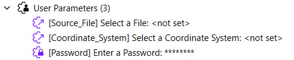 
Before creating your app, you can modify the default values set for each parameter or deselect 'Show in App' to remove the parameter from the app.
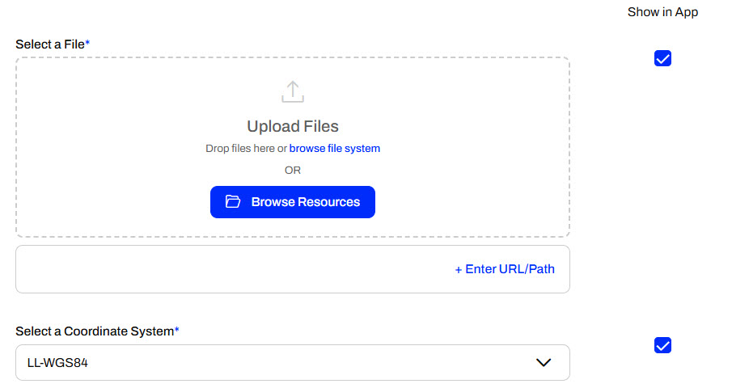 
If you do not show your parameter in the app, FME will use the default value for the parameter when running the workspace.


Published parameters, default values, and the ability to hide the parameter in your app allow you to choose which controls you grant to end-users in your workflow.
Exercise

Jennifer, a GIS Specialist, has a Workspace App that allows users to download community data from a geodatabase. Currently, her app utilizes the Data Download service to deliver community map layers to users as Esri shapefiles. While her app is working as she expects, she has received some requests for specific layers in various formats. Jennifer is going to use parameters to give her app users more control to customize the app output.
1) Run Current App
Jennifer navigates to FME Flow and opens Flow Apps > Manage Workspace Apps. She finds the community-data-download app and clicks Open App.

The app opens in another tab. Since it has no configurable parameters for the end-user, Jennifer clicks Run.

Once the workspace is complete, FME Flow presents the Data Download URL. Jennifer clicks the URL to download the zip file, opens the File Explorer, extracts the file, and views the data. The workspace includes all the layers in the CommunityMap.gdb as shapefiles, comprising 40 individual files.
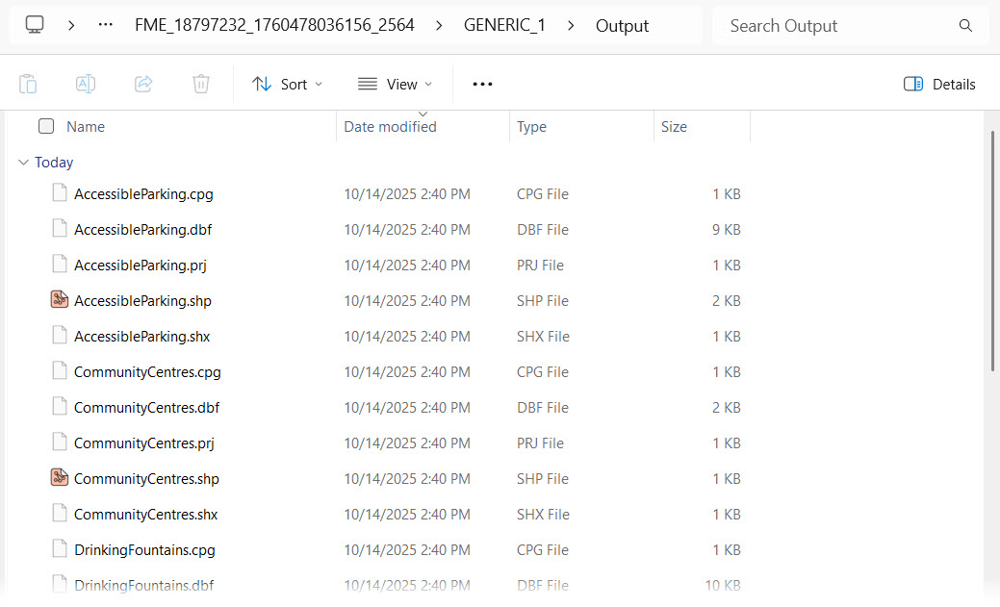
2) Open Workspace in FME Workbench
Jennifer opens her workspace (C:\FMEData\Workspaces\CreateDataIntegrationApps\community-map-data-download.fmw) in FME Workbench. Currently, Jennifer's workspace does not have any user parameters. Jennifer will add two choice parameters - one to select which layers to read from the geodatabase and one to choose the output writer format.

3) Add Feature Types to Read Parameter
Jennifer expands the CommunityMap reader section in the Navigator. She expands the Parameters and Features to Read. On the Feature Types to Read parameter, Jennifer right-clicks and selects Create User Parameter.
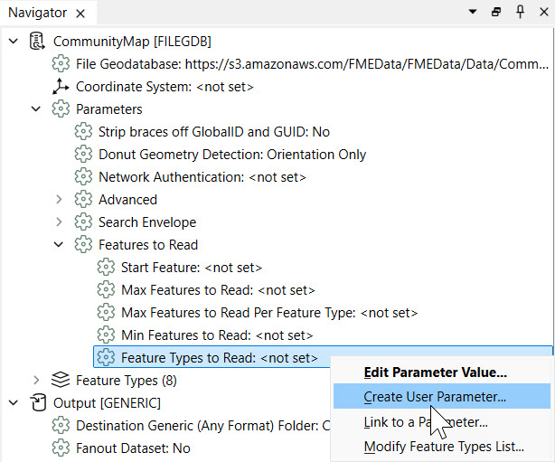
Jennifer changes the Prompt to Select Community Map Layers to Download, and clicks OK to create the user parameter.
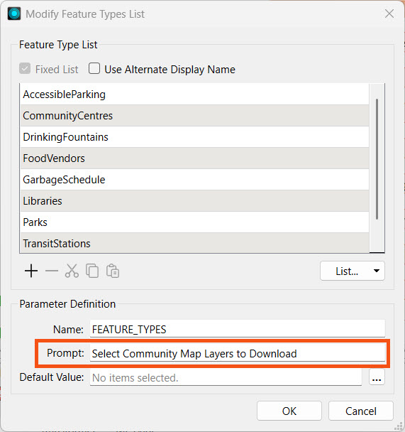
The new user parameter is displayed in the Navigator under User Parameters, and Feature Types to Read indicates that it links to the 'FEATURE_TYPES' parameter.
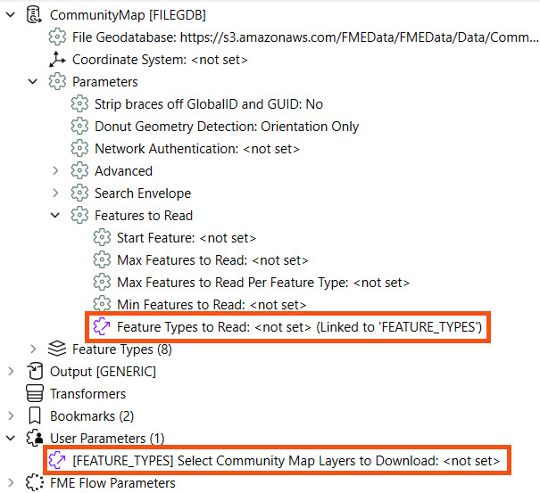
4) Add Writer Output Format Parameter
Jennifer expands the Output [GENERIC] writer settings in the Navigator window. She then expands Parameters to find the Output Format parameter; it is currently set to a shapefile. She right-clicks the Output Format parameter and selects Create User Parameter...
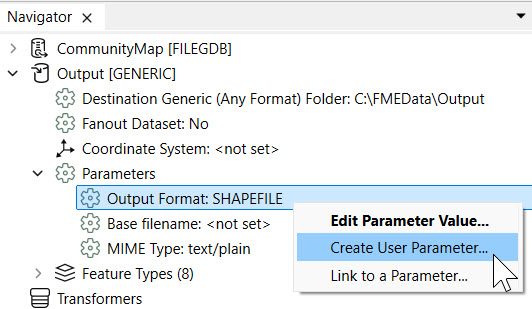
Jennifer sets the Parameter Identifier to 'FORMAT' and expands the Choice Configuration section. Beneath the Choices, Jennifer clicks Import and then selects Writer Formats...
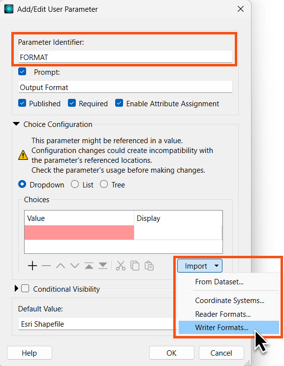
Jennifer uses the Search to filter and select Esri Shapefile, MapInfo TAB, and OGC / Google KML formats. FME will present these formats to the end-user when they configure the workspace to run. If Jennifer did not select any writer formats, the user will see an overwhelming list of all possible formats to choose from. Now, Jennifer will limit the selection to these three formats and may update the workspace to use other formats later. Once Jennifer selects the three formats, she clicks OK.
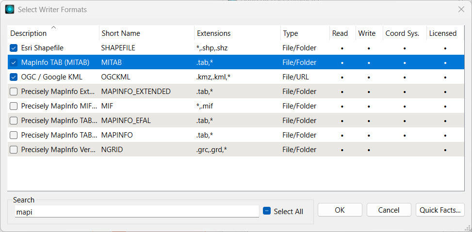
Jennifer checks her parameter settings and clicks OK again to complete the parameter creation.

The Navigator will show Jennifer's new parameter linked to the Output Format writer parameter.
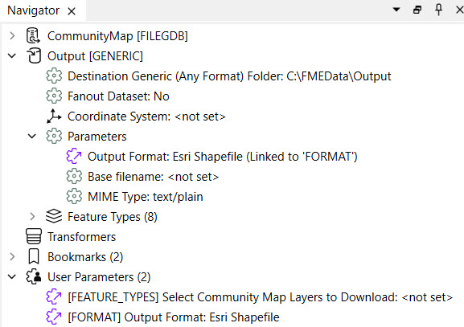
5) Publish Workspace to FME Flow
Jennifer saves her workspace and then publishes it to FME Flow.

She selects the Training repository and clicks the community-map-data-download.fmw workspace to overwrite it. Jennifer then clicks Next, and FME gives a warning about replacing the existing workspace on FME Flow. Jennifer selects Replace to confirm overwriting the existing workspace on FME Flow.
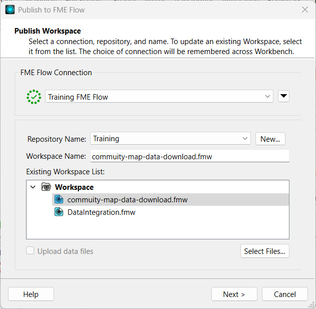 
Jennifer registers the workspace with the Data Download and Job Submitter services, then clicks Publish.
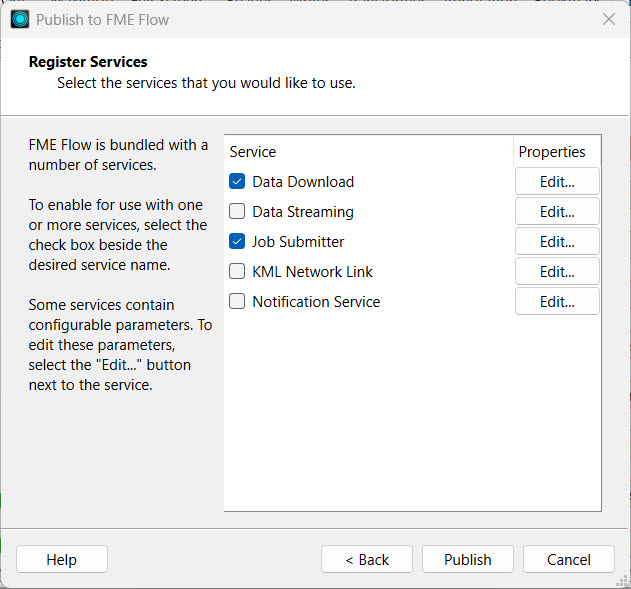
6) Edit Workspace App
Jennifer navigates to FME Flow and returns to the Manage Workspace Apps page. She clicks the community-data-download app to edit it.

On the editing page, Jennifer scrolls down and expands the Parameter Defaults section. The two parameters she created in FME Workbench are listed. Jennifer clicks Save.
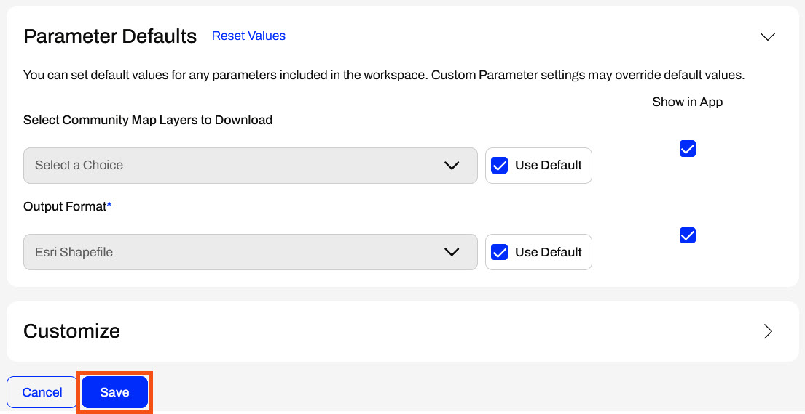
7) Run Workspace App
After saving, Jennifer clicks the app URL to open it. Now, her app presents the user with the choice parameters. Jennifer uses the drop-downs to select a couple of layers and an output format, then clicks Run.

Again, FME Flow presents Jennifer with a Data Download URL once the workspace completes. Jennifer downloads the data and inspects it to confirm that the Workspace App functions as expected, with only the layers the user selects and in the format the user chooses. Now, Jennifer is ready to share her self-serve app with others, allowing them to access the community map layers in the format they desire.